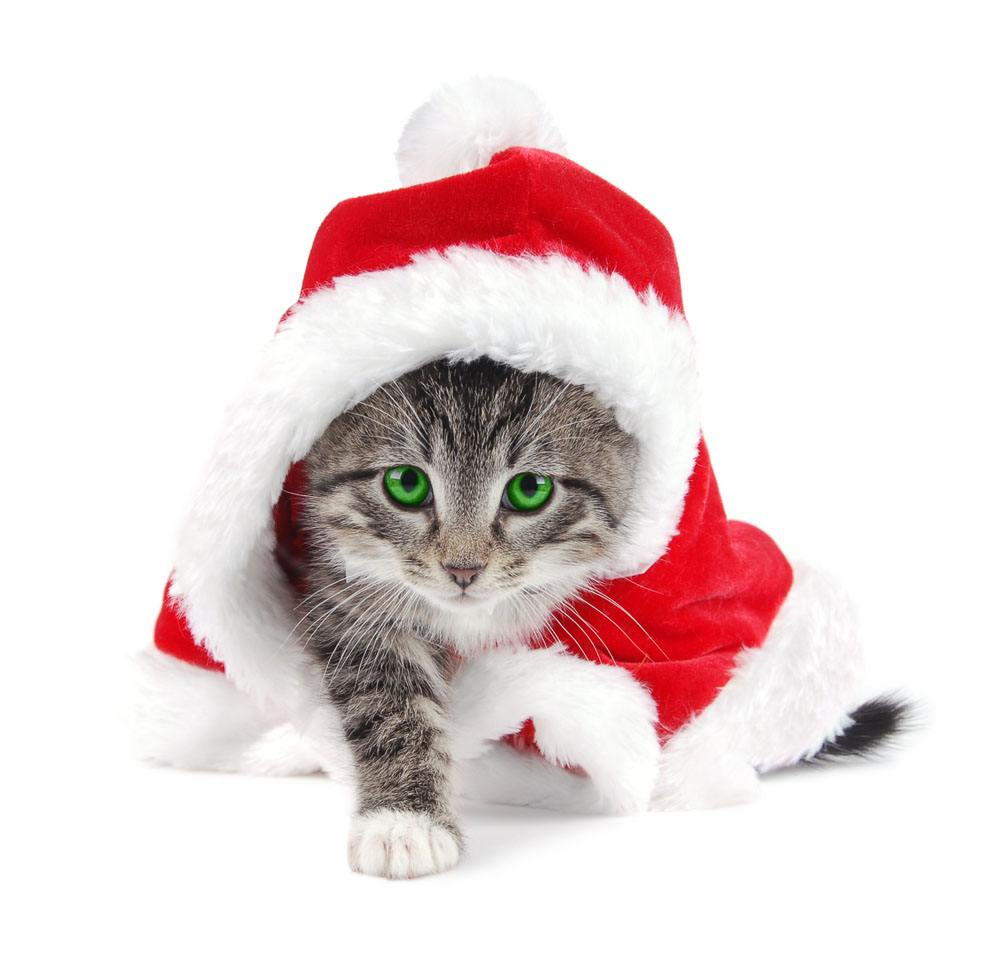

圣诞节看猫猫们怎么过
255k阅读·40分钟前发布
快乐
节日
圣诞节
西方人以红、绿、白三色为圣诞色，圣诞节来临时家家户户都要用圣诞色来装饰。红色的有圣诞花和圣诞蜡烛。绿色的是圣诞树。它是圣诞节的主要装饰品，用砍伐来的杉、柏一类呈塔形的常青树装饰而成。上面悬挂着五颜六色的彩灯、礼物和纸花，还点燃着圣诞蜡烛。
红色与白色相映成趣的是圣诞老人，他是圣诞节活动中最受欢迎的人物。西方儿童在圣诞夜临睡之前，要在壁炉前或枕头旁放上一只袜子，等候圣诞老人在他们入睡后把礼物放在袜子内。在西方，扮演圣诞老人也是一种习俗。
基督教堂在圣诞夜时就会门庭若市。一到圣诞节，这些教徒即前往教堂同庆耶稣诞辰。午夜时分的礼拜，备受非基督教徒青睐，纷纷前往教堂满足其好奇心。当然，教士也不失时机地向来者讲述基督降生于伯利恒--马槽的故事。
圣诞PARTY：
圣诞节必不可少的节目，有家庭式的，朋友式的，情人式的各种歌样PARTY。一种友情，亲情，爱情聚会的好时光。戴着圣诞帽，唱着圣诞歌，说说大家的圣诞愿望。
圣诞大餐：
圣诞节作为一个隆重庆祝节日，不能少了好吃美味食品。圣诞节火鸡大餐就是例牌主菜了，以前的人们或许会用微波炉自己做，现在的人们过节好多就是在外面餐馆里用餐了，商家们也会利用机会赚顾客们的钱，当然还有许多圣诞节食品，姜饼、糖果等等了。
圣诞帽：
那是一顶红色帽子，据说晚上戴上睡觉除了睡得安稳和有点暖外，第二天你还会发现在帽子里多了点心爱的人送的礼物。在狂欢夜它更是全场的主角，无论你去到那个角落，都会看到各式各样的红帽子，有的还有帽尖发亮的，有的是金光闪闪的。
圣诞袜：
最早以前是一对红色的大袜子，多大都可以，因为圣诞袜是要用来装礼物的，小朋友最喜欢的东西，晚上他们会将自己的袜子挂在床边，等待第二天早上的收礼。要是有人圣诞节送小 汽车那怎么办？那最好就叫他写张支票放进袜子里好了。
圣诞卡：
是祝贺圣诞及新年的贺卡，上面印着关于耶稣降生故事的图画，以及“庆祝圣诞、新年快乐之类的祝愿的话。

报佳音：
圣诞夜指12月24日晚至25日晨。教会组织一些圣诗班（或由信徒自发地组成）挨门挨户地在门口或窗下唱圣诞颂歌，叫作“报佳音”，意思是再现当年天使向伯利恒郊外的牧羊人报告耶稣降生的喜讯。“报佳音”的人称为Christmas Waits，这项活动往往要进行到天亮，人数越来越多，歌声越来越大，大街小巷满城尽是歌声。
颂歌：
圣诞节时唱的赞美诗称为“圣诞颂歌”。圣诞颂歌很多，曲谱多取自著名音乐家的名作。经常唱的有《普世欢腾，救主下降》、（Joy to the World！）、《天使歌唱在高天》（Angels WeHave Heard on High）、《缅想当年时方夜半》（It Cametbe Midnight Clear）、《美哉小城，小伯利恒》（O Little Town of Bethlehem）、 《牧人闻信》（While Shepherds Watched Their Flocks）、《远远在马槽里》（Away in the Manger ）、《荣耀天军》（Angels，from the Realms of Glory）、《听啊，天使唱高声》（Hark！ the Herald Angels Sing）、《圣诞钟声》（I Heard the Bells on Christmas Day）、等等其中以《平安夜》（Silent Night）最为有名。据说，1818年在奥地利一个名叫奥本多夫的小镇上住着一个默默无闻的乡村牧师一摩尔。这年圣诞节，摩尔发现教堂里管风琴的管于被老鼠咬坏了，修理已经来不及了。怎么庆祝圣诞呢？摩尔为此闷闷不乐。他忽然想起《路加福音》里记载着，那稣降生时，天使向伯利恒郊外的牧羊人报佳音后，高唱颂歌：“在至高之处荣耀归于上帝，在地上平安归于他所喜悦的人。”他灵机一动，根据这两句经文写成一首赞美诗，取名《平安夜》。摩尔写好歌词后拿给本镇小学教师葛路伯看，请他谱曲。葛路怕读完歌词很受感动，谱好曲，第二天在教堂里演唱，大受欢迎。后来有两个商人路过这里，学会了这首歌，他们为普鲁士国王威廉四世演唱，威廉四世听后大力赞赏，下令把《平安夜》定为全国教堂过圣诞节时必唱的歌曲之一。此外，有条件的教堂每年圣诞节时还会演唱德国著名音乐家韩德尔的《弥赛亚》（又名《救世主》）等音乐作品，通过这些音乐崇拜活动来加强节日的喜庆气氛。
圣诞老人：
据说他原是小亚细亚每拉城的主教，名叫圣尼古拉，死后被尊为圣徒，是一位身穿红袍、头戴红帽的白胡子老头。每年圣诞节他驾着鹿拉的雪橇从北方面来，由烟囱进入各家，把圣诞礼物装在袜子里挂在孩子们的床头上或火炉前。所以，西方人过圣诞节时，父母把给孩子的圣诞礼物装在袜子里，圣诞夜时挂在孩子们的床头上。第二天，孩子们醒来后的第一件事就是在床头上寻找圣诞老人送来的礼物。如今，圣诞老人已成为吉祥如意的象征，不仅是过圣诞节时不可缺少的人物，而且也是欢庆新年时不可缺少的人物。
圣诞树：
据说有一位农民在一个风雪交加的圣诞夜里接待了一个饥寒交迫的小孩，让他吃了一顿丰盛的圣诞晚餐，这个孩子告别时折了一根杉树枝插在地上并祝福说：“年年此日，礼物满枝，留此美丽的杉村，报答你的好意。”小孩走后，农民发现那树枝竟变成了一棵小树，他才明白自己接待的原来是一位上帝的使者。这个故事就成为圣诞树的来源。在西方，不论是否基督徒，过圣诞节时都要准备一棵圣诞树，以增加节日的欢乐气氛。圣诞树一般是用杉柏之类的常绿树做成，象征生命长存。树上装饰着各种灯烛、彩花、玩具、星星，挂上各种圣诞礼物。圣诞之夜，人们围着圣诞树唱歌跳舞，尽情欢乐。
圣诞节节礼：
指西方人过圣诞节时给邮差或佣人的节礼，通常放在一个小盒里，所以英文称为”Christmas Box"。
轻松一刻
马云说：双十一我们的目地不是赚钱，而是给人民带来快乐！
15k阅读·1k评论
如果月亮的光是来自于太阳的光，那为何它无法杀死吸血鬼？
15k阅读·1k评论
当你学会不给别人添麻烦的时候，你的生活就只剩别人给你添麻烦了。
15k阅读·1k评论
这年头的人宁愿说自己有病也不愿承认自己平凡
15k阅读·1k评论
马云的笑不倾国，不倾城，只倾家荡产。
15k阅读·1k评论